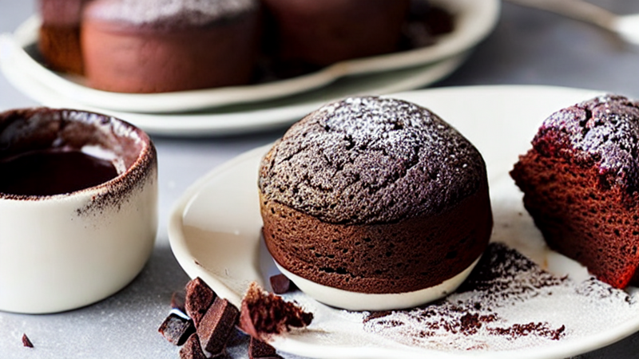
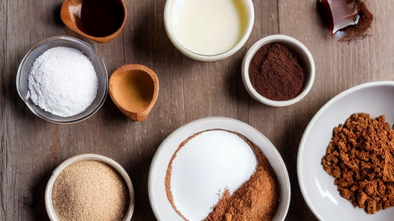
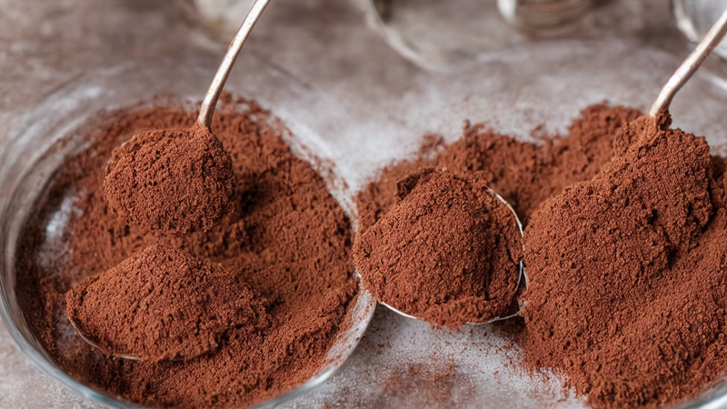
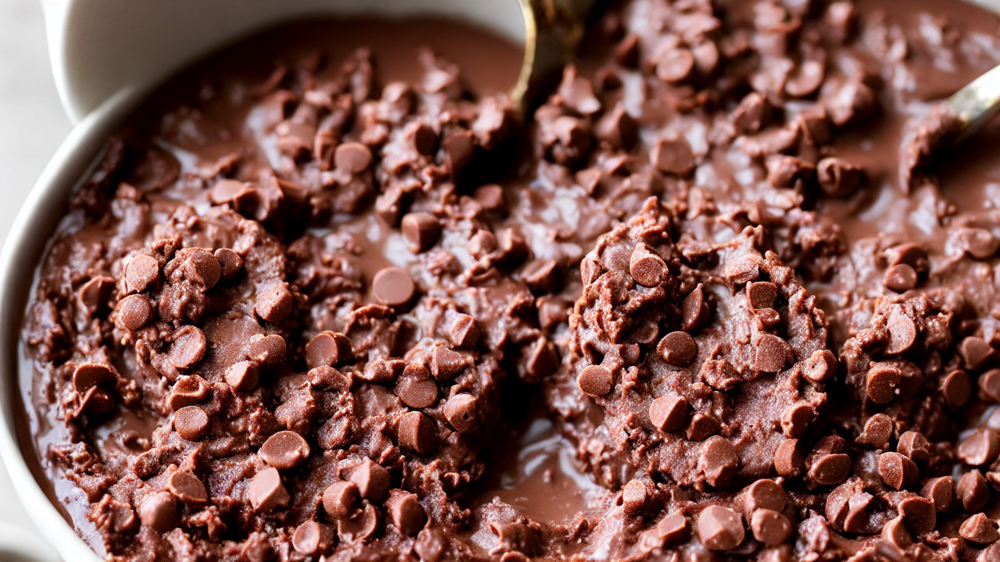
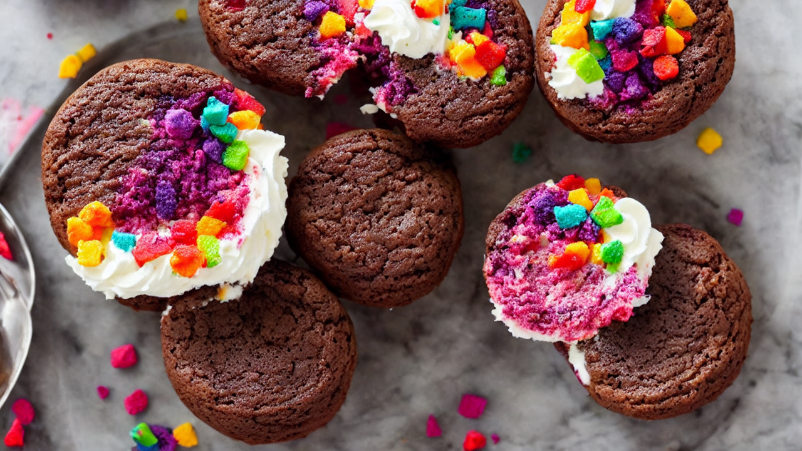
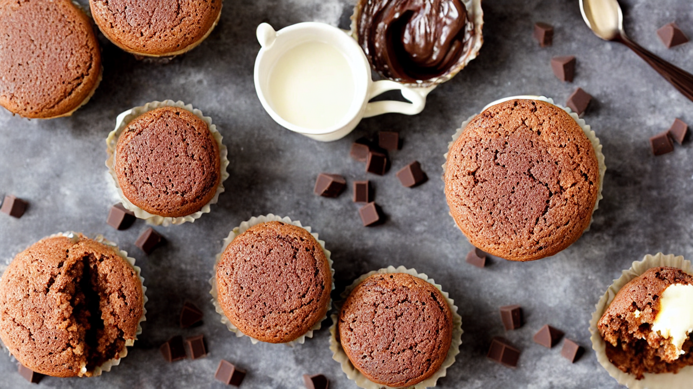
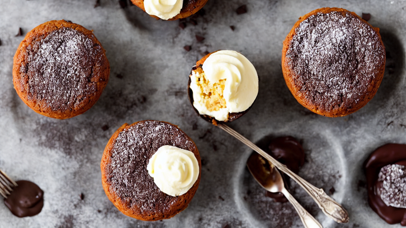
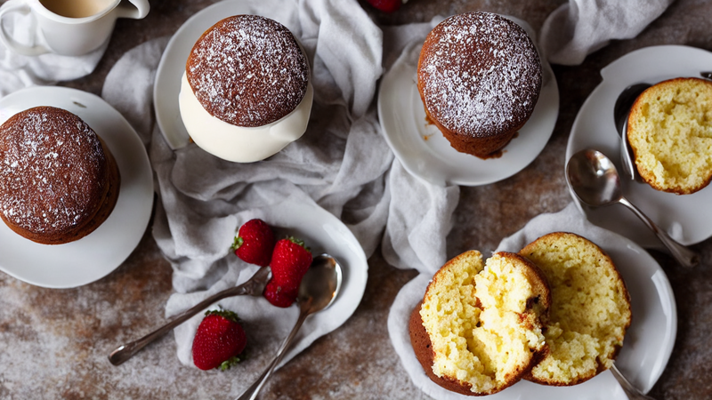
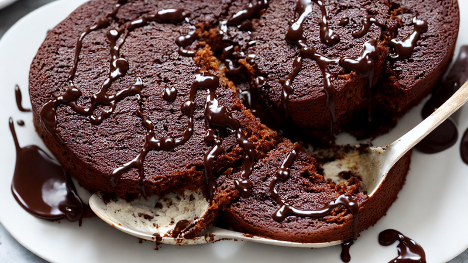

5-Minute Chocolate Mug Cake | Quick Dessert Hack!
This 5-Minute Chocolate Mug Cake is a game-changer for sweet cravings! Perfect for busy nights or impromptu treats. Easy steps, no oven needed—grab your mug and indulge!
Ingredients
- your mug and these 5 ingredients: cocoa powder
- sugar
- egg
- milk
- oil
- chocolate chips
- No mixer needed!
Instructions

This 5-Minute Chocolate Mug Cake is so good, you'll never order takeout again! Perfect for busy nights or sweet cravings.

Grab your mug and these 5 ingredients: cocoa powder, sugar, egg, milk, oil, and chocolate chips. No mixer needed!

Mix dry ingredients first—cocoa powder, sugar, and flour—then whisk in wet ingredients like egg, milk, and oil.

Pour batter into mug, add chocolate chips, and microwave for 60 seconds. Watch it bubble and rise!

Top with whipped cream, sprinkles, or a drizzle of caramel for extra indulgence. Steam rises from hot mug.

Let it cool slightly for a gooey center, then enjoy this melt-in-your-mouth dessert straight from your mug!

Need a quick treat that’s better than store-bought? This mug cake delivers rich flavor in minutes—no kitchen skills required!

Share the love! Tag us in your creations and follow for more easy recipes that make baking fun and fast.

Enjoy your gooey, chocolatey mug cake! Subscribe for more quick recipes and dessert hacks—because every day should be sweet!